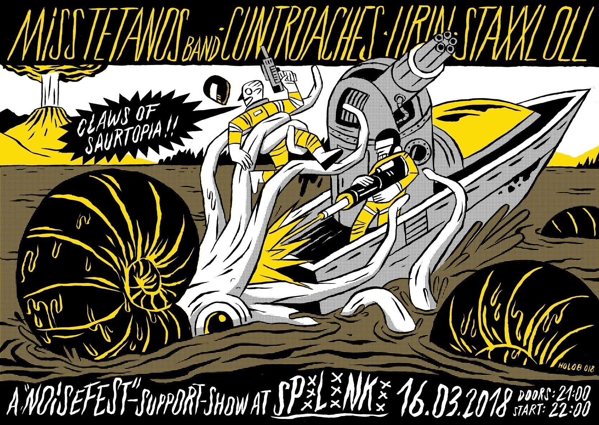

Claws of Saurtopia Noise Fest Warm-Up #1

It’s all true! After a five year break there’ll be another Claws of Saurtopia Fest this year—on June 1 and 2, 2018 to be exact. In order to prepare you and us for this noise banquet, we’ll do some support shows. Here’s the first:
Friday, 16th March 2018
Miss Tetanos [dancy kraut wave /
Belgium]
https://misstetanos.bandcamp.com
https://www.youtube.com/watch?v=QKIQDj5mdvA
Cuntroaches
[crapcore / Brln]
Berlin’s unsound blackened noise punks CUNTROACHES are back in town again.
Feat. members of BATALJ!
https://cuntroaches.bandcamp.com
Urin [d-beat, noise /
Brln]
New super group feat. members of PISS, G.L.O.S.S., BATALJ, Cuntroaches, Die Pest,
Vexx.
Staxl Oll [spiritual improv / Leipzig] Tortellini Records
Staxl Oll is a transcendental research group from Leipzig city
investigating relations between sonic reception and mental drift. As for
their most recent project this coalition of 7 to 10 people will employ
rhythmic patterns and hardly apperceptive noises to arrive at new
results in their studies.
::::::::::::Aftershow DJ(s) No Income Taxi Drivers
::::::::::::
This is a Claws Of Saurtopia Noise Fest Warm Up Show!
Our festival will take place in Leipzig 1st-2nd June 2018 - there’ll
be a little SHOT & SCHNITTCHEN BAR tonight to raise some $$$ for
this event!!
LOCATION: Spxlxnkx
DOORS/TÜR/PORTES 21:00
use of
earplugs highly recommended